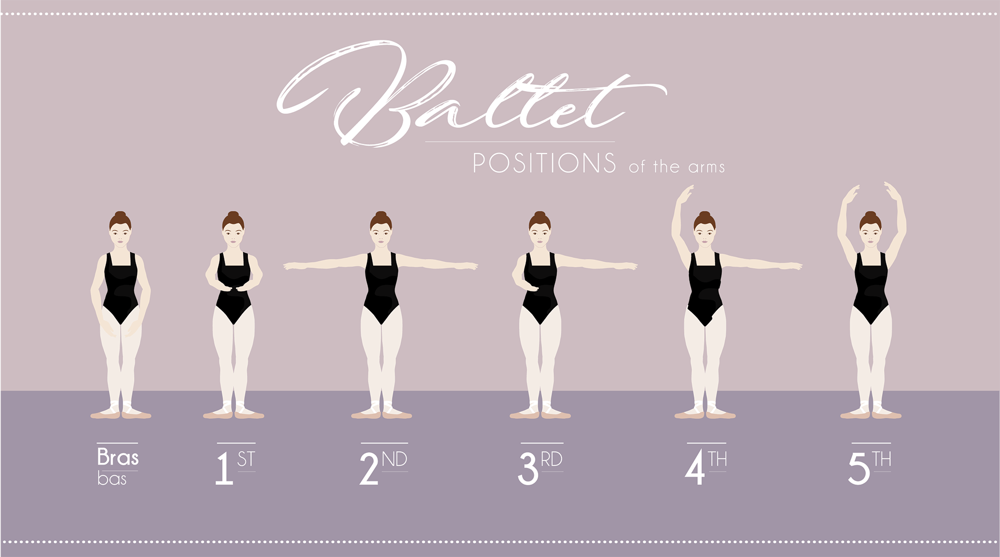
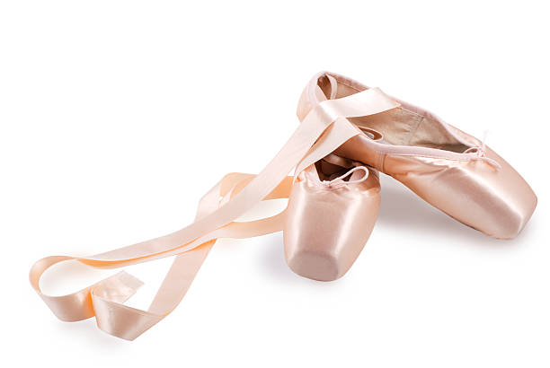
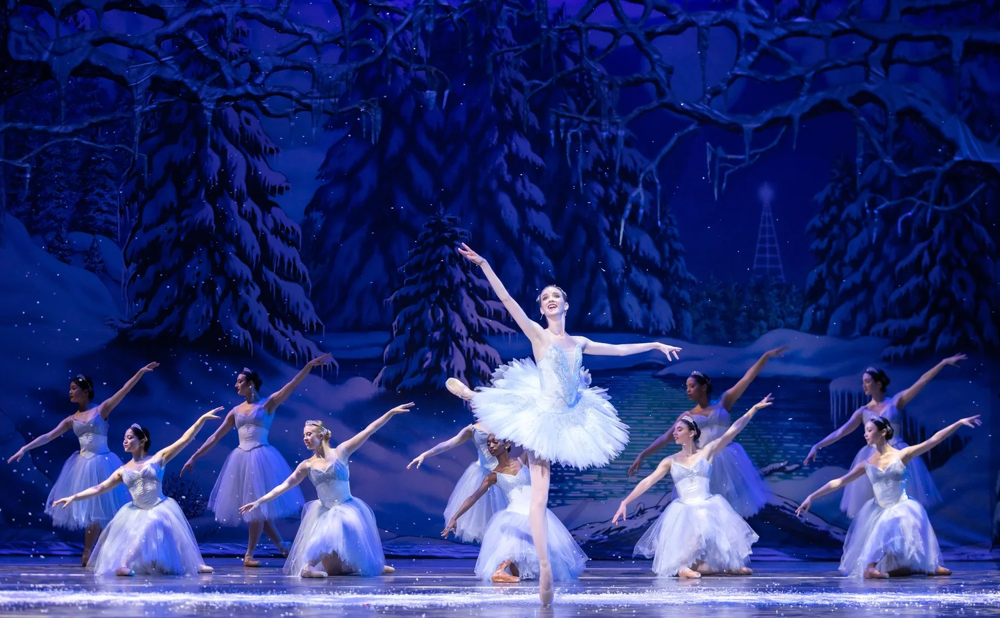
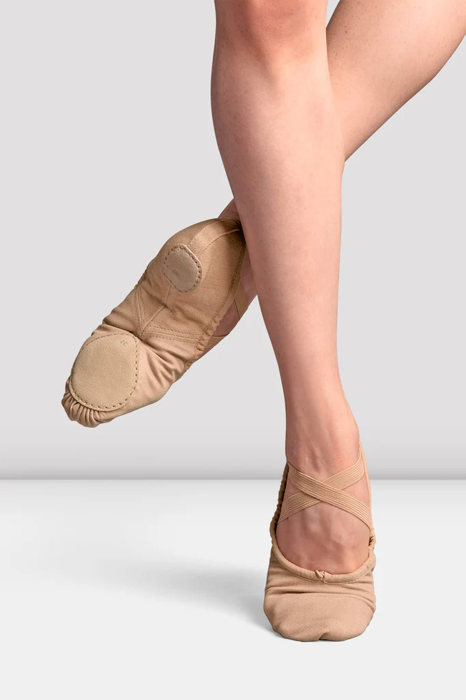

Ballet is a dance form with an emphasis on grace, control and precision. Some things worked on in ballet are:

In ballet, there are 5 basic positions that are taught in beginner class. The five positions are: first, second, third, fourth and fifth. These positions are used in all levels of ballet training, and learning these positions is one of the most crucial things to do to master ballet technique. Normally in a ballet class, you do barre at the beginning, and these positions are done in barre combinations which help build technique. These positions are incorporated into across the floor, center, stretching, strengthening, skills and performances. For example, pirouettes are commonly done in fourth and fifth position. Normally in ballet classes, these positions are done first at barre before doing them in center.

Also, some female dancers dance en pointe—an advanced dance level where dancers dance on the tips of their toes. This requires flexibility, strength, and training. Dancing on pointe is not something you can do overnight. Your feet have to be well trained and evaluated through an exam before you can even recieve the pointe shoes. It depends on your age and level of training, but being ready to go on pointe can take many years. For example, if you start ballet at a young age, it takes years before you even start preparing for pointe. However, if you are older and training consistently, it can take less time for you to get on pointe. Another thing going en pointe depends on is the hardening of your feet bones. Without fully hardened bones in your foot, it is extremely unsafe to go en pointe, and it can lead to long term injuries.

There are many types of ballet performances. At studios, one of the most popular types is the nutcracker. In ballet performances like the nutcracker, auditions are normally held, roles are recieved, and many combinations related to ballet technique are performed to tell the story. Variations en pointe and ensemble dance scenes are commonly done. For example, in this photo, there is an ensemble group of dancers en pointe portraying snow, and there is a snow queen en pointe doing a variation. The dance pieces in the show are based of off the technique and dance moves students build on to and learn in their ballet classes.
This journey applies to students who start ballet at a young age. Everyone reaches pointe at their own pace, which is absolutely fine!
| Age Range | What you are focusing on | How close you are to pointe |
|---|---|---|
| 6-8 | Learning basic positions and coordination. | Building a foundation. |
| 8-10 | Building strength in the ankles and feet, and learning more complex movements. | Developing the necessary strength. |
| 10-12 | Refining technique and starting to prepare for pointe work. | Almost there! Ready for evaluations. |
| 12+ | Starting pointe work (if ready) and continuing to build strength and grace. | On pointe or working towards it! |
